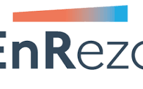
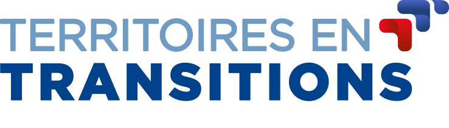
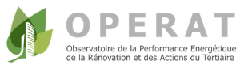
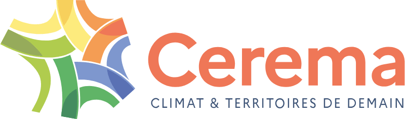
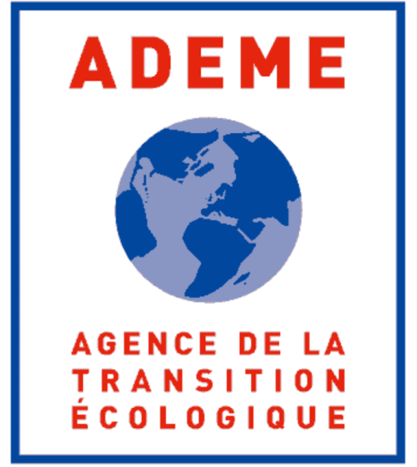

Enedis • ADEME • public datasets
Authoritative evidence on consumption, generation, environmental context and other territorial variables.
France already has territorial data platforms, specialist energy tools, national datasets, transition-management systems, consultants and public technical institutions. Wenergy does not compete by pretending those capabilities do not exist.





Wenergy's thesis is stronger when it acknowledges the real tools, organisations and professional workflows already used by territories.
Authoritative evidence on consumption, generation, environmental context and other territorial variables.
Territorial visualisation, indicators, scenario exploration and energy context.
Strong specialist logic around heat networks and renewable/recoverable heat opportunities.
Territorial transition planning, collaboration and action-management infrastructure.
Human expertise, technical validation, engineering and territorial support.
Physical project development, construction, financing and operations.
Existing tools and experts provide:
Wenergy aims to connect those fragmented capabilities through:
This matrix is a strategic comparison of broad capability categories, not a claim that every competing product has identical functionality.
| Capability | TerriSTORY | EnRezo | Territoires en Transitions | OPERAT / Data | Consultants / BETs | Wenergy |
|---|---|---|---|---|---|---|
| Territorial data visibility | Strong | Specialist | Partial | Strong data | Project-specific | Integrated |
| Multi-energy screening | Partial | Heat-focused | Not core | No | Possible | Core |
| Resource ↔ demand relationships | Partial | Strong for heat | Not core | No | Yes | Core |
| Actor-connected project object | Limited | Pathway context | Action actors | No | Human-led | Project Lens |
| Evidence taxonomy / uncertainty | Varies | Varies | Varies | Source data | Professional | Explicit |
| Professional handoff logic | Not core | Possible | Action management | No | Core expertise | Core boundary |
| Project maturity / memory | Limited | Limited | Strong action tracking | No | Project-based | Designed in |
| Community simple mode | Possible | Possible | Possible | Data-oriented | Depends | Product goal |
| Low-data evidence adaptation | Not core | Not core | Not core | Data dependent | Human-led | Roadmap core |
Compare multiple renewable and recoverable pathways through a common territorial project model.
Transform opportunity markers into structured evidence, actor, uncertainty and action objects.
Keep OBSERVED, ESTIMATED, INFERRED and other evidence classes visible.
Connect source, demand, public actors and professionals around a shared project object.
Preserve next actions, maturity and project memory beyond one-time studies.
Reduce confidence transparently when territorial data are incomplete instead of requiring perfect data everywhere.
At POC stage, Wenergy should not claim defensibility simply because it uses AI, maps or public data.
Existing platforms may integrate more project-orchestration capability.
The incremental Wenergy value may be too small to justify payment.
Professional firms may build reusable digital screening layers.
Larger public authorities may solve the workflow internally.
Existing customer access and implementation capacity can create strong bundled offerings.
Language-generation features alone cannot sustain differentiation.
Wenergy is testing whether territories will pay for a shared, multi-energy project-intelligence system that connects public evidence, actors and constraints into explainable Project Lenses — then directs the strongest candidates toward qualified professional action.
The competitive thesis is promising — but the pilot must prove that this connective layer creates enough incremental value.
Public tools, datasets, specialists and consultants already support territorial energy transition.
Wenergy may create value by connecting capabilities that remain fragmented across today's workflow.
Workflow embedding, returned evidence and institutional trust must emerge through real deployments.